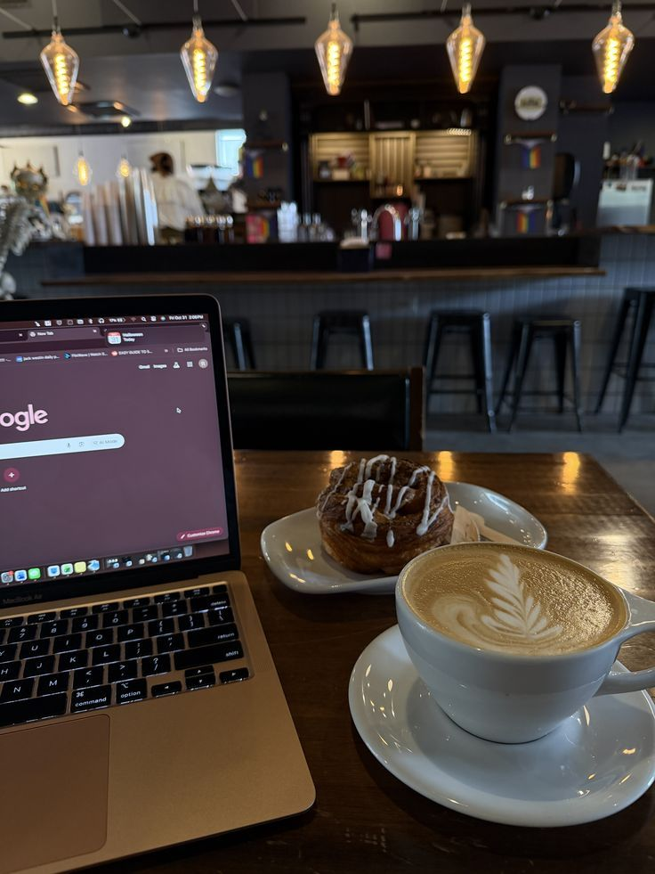
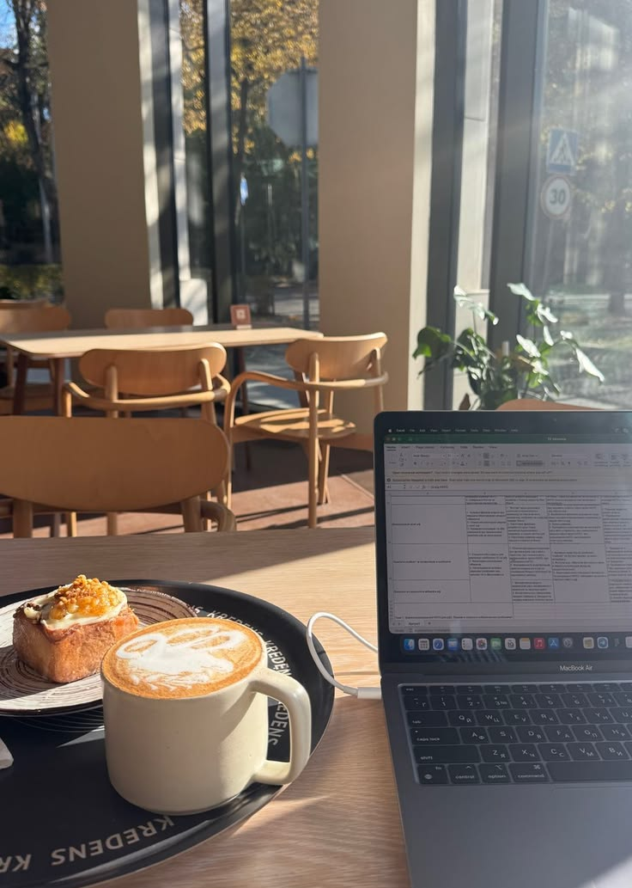

no one warns you about the isolation part. they talk about the hustle. the grind. the sleepless nights. nobody tells you about the specific loneliness.
being a student founder means existing in this weird liminal space where you can't fully commit to either identity. you're not a regular student because your brain is always running background processes on your company. you're not a full-time founder because you still have to show up to lectures and write essays and pretend that calculus matters when you're thinking about user acquisition metrics.
your friends don't quite get it. they see the products you're building and they're impressed but there's this thing underneath the impression that's like: but what are you actually doing with your life. like building things doesn't count as doing something with your life until you've proven it makes money or gets acquired or reaches some arbitrary benchmark.


and the other founders — the ones who dropped out or the ones working in proper companies — they're operating at a different frequency. they have resources you don't have. focus you can't quite achieve. they're building full-time while you're building in the cracks between everything else.
some days i sit in styclick sprint planning and i'm thinking about the ui redesign and the warm editorial system and how to get the first hundred users. and then i get a notification about an assignment due and the whiplash is genuinely violent. i'm not laser-focused. i'm not willing to sacrifice the education part because i genuinely think learning matters. but that means everything takes longer.
the thing that matters most is the thing you'd be working on at 3am when nobody was asking. that's the real test. for me that's arguuu and styclick. so those stay. everything else is negotiable. even when it doesn't feel like it.
← Back to Blog